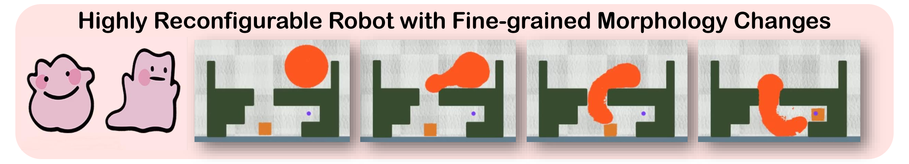

Morphological Maze: Control Reconfigurable Soft Robots with Fine-grained Morphology Change
Abstract
Robot co-design, where the morphology of a robot is optimized jointly with a learned policy to solve a specific task, is an emerging area of research. It holds particular promise for soft robots, which are amenable to novel manufacturing techniques that can realize learned morphologies and actuators. Inspired by nature and recent novel robot designs, we propose to go a step further and explore the design of reconfigurable robots, defined as robots that can change their morphology within their lifetime. We formalize control of reconfigurable soft robots as a high-dimensional reinforcement learning(RL) problem. We unify morphology change, locomotion, and environment interaction in the same action space, and introduce an appropriate, coarse-to-fine curriculum that enables us to discover policies that accomplish fine-grained control of the resulting robots. We also introduce Morphological Maze, a comprehensive RL benchmark for reconfigurable soft robots that require fine-grained morphology changes to accomplish the tasks. Finally, we evaluate our proposed coarse-to-fine algorithm on Morphological Maze and demonstrate robots that learn to change their morphology several times within a sequence, uniquely enabled by our RL algorithm.
Highlights

In this paper, we address challenges in controlling reconfigurable robots, who can change their morphology to accomplish desired tasks. The figure above illustrates a task where a circular robot needs to alter its body shape to fit within a confined chamber to manipulate the square cargo to the target point. For more information, please check our paper: click to check PDF.
Morphological Maze
We demonstrate the results from Morphological Maze. Notably, policies trained under the guidance of CFP exhibit precise control over highly reconfigurable robots, enabling them to successfully accomplish their respective tasks.
The videos may take a few minutes to load. Thank you for your patience!
MATCH
RUN
GROW
KICK
DIG
OBSTACLE
CATCH
SLOT
COARSE-to-FINE
We implement coarse-to-fine curriculum to further enhance the agent's performance. The video demonstrates several tasks which have significantly improvements.